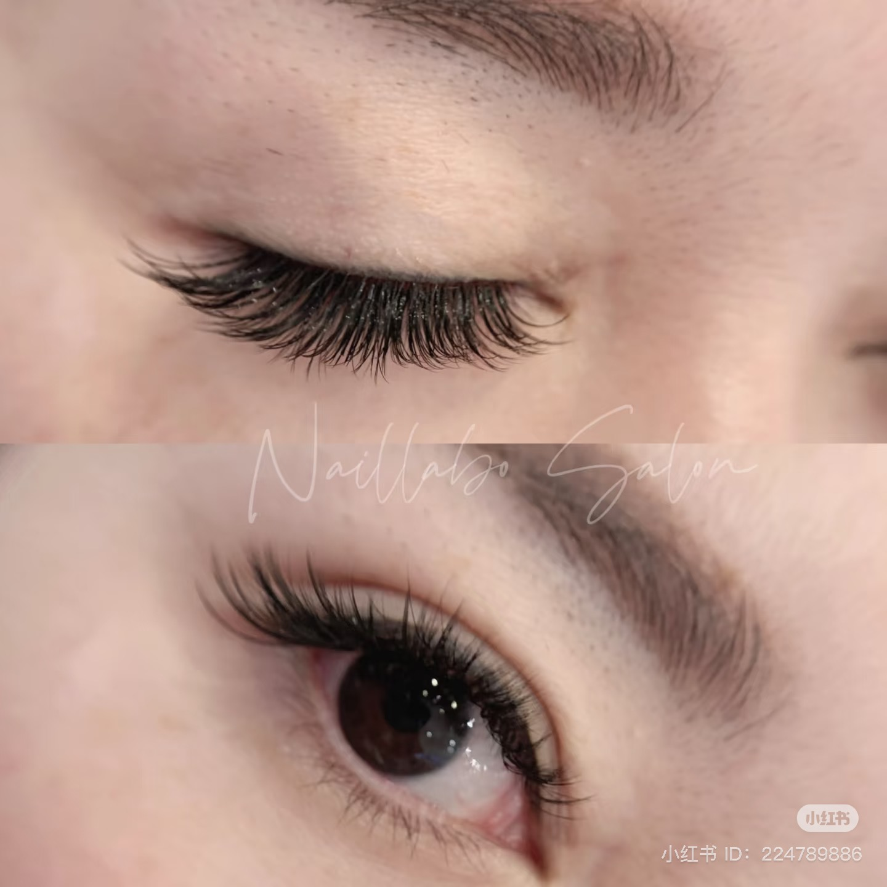

Eyelash Extensions Vancouver: The Ultimate Guide to Flawless Lashes
Finding the perfect eyelash extensions in Vancouver can transform your daily beauty routine. Whether you are preparing for a special event or simply want to wake up looking refreshed.

Why Choose Eyelash Extensions?
Eyelash extensions are semi-permanent fibers attached to your natural eyelashes to enhance their length, curl, fullness, and thickness. Unlike traditional false eyelashes, extensions are applied individually to each natural lash, creating a seamless and natural appearance. This meticulous process ensures that your lashes look beautiful without the need for daily mascara application.
The benefits of eyelash extensions extend beyond aesthetics. They save significant time during your morning routine and provide a confidence boost. According to the American Academy of Ophthalmology, eyelash extensions can be a safe cosmetic treatment when applied correctly by trained professionals.

Current Trends in the Vancouver Lash Market
The beauty landscape in Vancouver is constantly evolving, and eyelash extensions are no exception. In 2025, the trend is shifting towards a more natural, "skinimalist" approach.
"Skinimalist" Approach
Clients are increasingly requesting lighter, wispy extensions that enhance their natural eye shape without appearing overly dramatic.
Bespoke Customization
Technicians assess your eye shape, natural lash health, and personal preferences to create a look that is uniquely yours.
Classic & Volume
Whether you prefer a subtle enhancement or a bolder statement, our skilled technicians stay updated with the latest techniques.
Essential Aftercare for Long-Lasting Lashes
Proper aftercare is essential to maximize the lifespan of your eyelash extensions and maintain the health of your natural lashes.
The First 48 Hours
Avoid water and steam for the first 24 to 48 hours after application. This allows the adhesive to cure completely.
Keep Them Clean
Use an oil-free cleanser specifically formulated for eyelash extensions. Oil-based products can break down the adhesive.
Gentle Maintenance
Avoid rubbing your eyes or pulling on the extensions. Use a clean spoolie brush daily to gently comb through your lashes.
Sleep on Your Back
Sleeping on your back can help prevent the extensions from being crushed against your pillow during the night.

Why Naillabo Beauty Salon is Your Best Choice
When searching for eyelash extensions in the Vancouver area, Naillabo Beauty Salon stands out for our commitment to quality and client satisfaction. With over a decade of experience, our team is dedicated to providing a relaxing and professional environment.
Our salon in Richmond offers a convenient location for clients across the Greater Vancouver area (Aberdeen Center). We pride ourselves on our meticulous application process, ensuring that each extension is perfectly placed for a natural and beautiful result.
- 10+ Years of Experience
- Premium Synthetic Extensions
- Located in Aberdeen Center, Richmond
Frequently Asked Questions (FAQ)
Ready for Your Stunning New Look?
Book your professional eyelash extension appointment at Naillabo Beauty Salon today.
Book Your Appointment NowReferences:
- [1] American Academy of Ophthalmology. "Eyelash Extension Facts and Safety." View Article
- [2] All About Vision. "Risks and Benefits of Eyelash Extensions: What to Expect." View Article